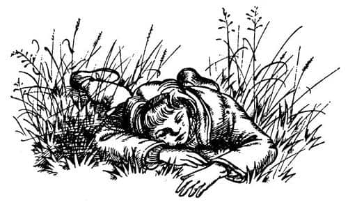
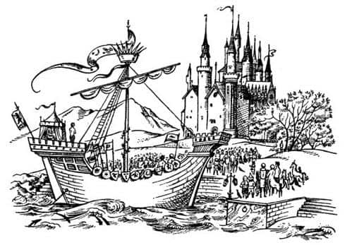

Jill’e Bir Görev Veriliyor
Aslan, Jill’e bakmadan ayağa kalkıp son kez üfledi. Sonra yaptığından memnun kalmış gibi döndü, yavaş ve uzun adımlarla ormana doğru ilerledi.
“Bu bir rüya olmalı, rüya olmalı” dedi Jill kendi kendine. “Az sonra uyanırım.” Oysa gördükleri rüya değildi, uyanmadı da.
“Keşke bu korkunç yere gelmeseydik” dedi Jill. “Scrubb’ın burası hakkında benden fazlasını bildiğine inanmıyorum. Biliyorduysa, nasıl bir yer olduğundan bahsetmeden kolumdan tutup beni buraya sürüklemesi hiç de adil değil. Uçurumdan düşmesi benim hatam değil. Beni rahat bıraksaydı ikimiz de iyi durumda olurduk.” Sonra Scrubb’ın düşerken attığı çığlığı hatırladı ve gözyaşlarına boğuldu.

Ağlamanın, kendine göre bir iyiliği, rahatlatıcı bir tarafı vardır. Ama er geç durmak ve ne yapacağınıza karar vermek zorunda kalırsınız. Jill ağlamayı kestiğinde korkunç bir susuzluk çektiğini anladı. Yüzükoyun yatmaktaydı, doğrulup oturdu. Kuşların şarkıları susmuştu, epeyce uzaklardan geldiği anlaşılan cılız ve ısrarcı bir ses dışında, büyük bir sessizlik hâkimdi. Dikkatle dinleyince, bu sesin bir akarsudan geldiğine emin oldu.
Ayağa kalktı ve etrafına bakındı. Aslandan hiçbir iz yoktu, ama çevresinde o kadar çok ağaç vardı ki, yakınında olsa bile onu görmeyebilirdi. Çevrede bir sürü aslan olabileceğini düşünüyordu. Susuzluğu dayanılmaz bir hal almıştı, akarsuyu aramak için tüm cesaretini topladı. Parmaklarının ucunda yürüyerek dikkatle ağaçtan ağaca geçiyor, her adımda durup çevresini kolaçan ediyordu.
Orman o kadar sessizdi ki, sesin nereden geldiğini anlamak zor değildi. Zaman geçtikçe ses daha da belirginleşti ve umduğundan daha kısa bir sürede açık alana ulaştı; kendisinden bir taş atımı uzaklıkta cam gibi akan dereyi gördü. Suyu görmek susuzluğunu on kat artırdıysa da hemen içmedi. Ağzı bir karış açık, sanki taşlaşmış gibi kıpırdamadan durdu. Susuzluğunu gidermemesinin geçerli bir sebebi vardı; çünkü aslan derenin kenarında yatmaktaydı.
Trafalgar Meydanı’ndaki aslanlar gibi başı yukarıda, ön pençeleri ileriye doğru uzanmıştı. Jill aslanın onu gördüğünü hemen anlamıştı, çünkü aslan bir an için dimdik onun gözlerine bakmıştı. Sonra sanki onu çok iyi tanıyormuş ama pek değer vermiyormuş gibi çevirmişti gözlerini.
“Kaçarsam anında peşime takılır” diye düşündü Jill. “Devam edersem de dosdoğru ağzına düşeceğim.” Her neyse, istese de hareket edemiyor, gözlerini ondan ayıramıyordu. Bunun ne kadar sürdüğünden emin değildi; saatler geçmiş gibiydi. Susuzluğu öylesine artmıştı ki, bir yudum su içebileceğine emin olsa aslan tarafından yenmeye aldırmayacaktı.
“Susadıysan içebilirsin.”
Scrubb uçurumun kenarında onunla konuştuğundan beri duyduğu ilk sözlerdi bunlar. Bir saniye kadar kimin konuştuğunu merak ederek etrafına bakındı. Sonra ses yine, “Susadıysan gel iç” dediğinde, Scrubb’ın bu dünyadaki hayvanların konuşabildiğini söylediğini hatırlayıp konuşanın aslan olduğunu anladı. Zaten dudaklarının kıpırdadığını görmüştü; hem ses bir insanınkine benzemiyordu. Daha derin, vahşi ve güçlüydü; ağır, altın gibi bir sesti. Bu ses korkusunu artırmamıştı, ama değişik bir şekilde korkmasına neden olmuştu.
“Susamadın mı?” dedi Aslan.
“Susuzluktan ölüyorum” dedi Jill.
“Öyleyse iç” dedi Aslan.
“İç – içebilir miyim? İçebilmem için uzaklaşır mısın?” dedi Jill.
Aslan hafif bir kükreme ve sert bir bakışla karşılık verdi. Jill onun hareketsiz vücuduna baktığında, kendi ağzından çıkan sözlere şaştı, bunun bir dağın kenara çekilmesini istemekle aynı şey olduğunu anladı.
Deredeki suyun küçük dalgacıklarının çıkardığı güzel ses, onu neredeyse çılgına çeviriyordu.
“Yaklaşırsam bana bir şey yapmayacağına söz verir misin?” dedi Jill.
“Ben söz vermem” dedi Aslan.
Jill artık öylesine susamıştı ki, farkında olmadan bir adım yaklaştı.
“Kızları yer misin?” dedi.
“Kızlar, oğlanlar, kadınlar, erkekler, krallar, imparatorlar, şehirler ve ülkeler yuttum ben” dedi Aslan. Bunları, ne övünerek, ne üzülerek, ne de kızarak söylemişti. Sadece söylemişti.
“Gelip içmeye cesaret edemiyorum” dedi Jill.
“O zaman susuzluktan öleceksin” dedi Aslan.
“Eyvah!” dedi Jill bir adım daha yaklaşarak. “Sanırım gidip başka bir dere aramak zorundayım.”
“Başka dere yok” dedi Aslan.
Aslan’a inanmamak Jill’in aklının ucundan bile geçmedi. Zaten onun ciddi yüzünü gören hiç kimse bunu yapamazdı. Aniden kararını verdi. O ana kadar yapmak zorunda kaldığı en kötü şeydi bu, ama dereye doğru ilerledi, diz çöktü ve suyu avuçlamaya başladı. Tattığı en soğuk ve canlandırıcı suydu bu. Susuzluğunuzu hemen giderdiğinden fazla içmenize gerek yoktu. İçmeye başlamadan önce, bitirdiği anda fırlayıp kaçmaktı niyeti. Artık bunun yapabileceği en tehlikeli şey olduğunu düşünüyordu. Ayağa kalktı ve durdu; dudakları hâlâ ıslaktı.
“Gel buraya” dedi Aslan. Jill gitmek zorundaydı. Neredeyse onun pençeleri arasındaydı, dosdoğru yüzüne bakıyordu. Ancak buna fazla dayanamadı; gözlerini yere çevirdi.
“İnsan çocuğu” dedi Aslan. “Oğlan nerede?”
“Uçurumdan düştü” dedi Jill ve “efendim” diye ekledi. Ona nasıl hitap etmesi gerektiğini bilmiyordu, ama bir şey dememesi de saygısızlık olurdu.
“Tüm bunlar nasıl oldu, insan yavrusu?”
“Benim düşmemi engellemeye çalışıyordu, efendim.”
“Uçurumun kıyısına neden o denli yakındaydın?”
“Gösteriş yapıyordum, efendim.”
“Bu çok iyi bir cevap, insan yavrusu. Bir daha yapma. Şimdi” (burada Aslan’ın yüz ifadesi ilk kez biraz yumuşamıştı) “oğlan emniyette. Onu Narnia’ya üfledim. Ama yaptıklarından dolayı senin görevin daha zor olacak.”
“Ne görevinden söz ediyorsunuz, efendim?” dedi Jill.
“O ve sen, kendi dünyanızdan, bir görevi yerine getirmek için çağrıldınız.”
Bu Jill’i çok şaşırtmıştı. Beni başka biriyle karıştırıyor, diye düşündü. Söylemezse her şeyin karmakarışık olacağını hissetmesine rağmen bunu Aslan’a söylemeye cesaret edemedi.
“Ne düşündüğünü söyle, insan yavrusu” dedi Aslan.
“Merak ediyordum, yani bir yanlışlık olamaz mı? Çünkü biliyorsunuz beni ve Scrubb’ı kimse çağırmadı. Buraya gelmeyi isteyen bizlerdik. Scrubb birini – bu kişiyi tanımıyordum – çağırmamızı ve belki bu kişinin bizi duyacağını söylemişti. Öyle yaptık, sonra da kapıyı açık bulduk.”
“Ben sizi çağırmadıkça siz beni çağıramazdınız” dedi Aslan.
“Öyleyse o birisi siz misiniz, efendim?” dedi Jill.
“Benim. Şimdi görevini dinle. Buradan çok uzaktaki Narnia ülkesinde, kendisinden sonra kral olacak bir vârisi olmadığı için çok üzgün olan yaşlı bir kral yaşıyor. Tek oğlu yıllar önce kaçırıldı ve Narnia’daki hiç kimse bu prensin nereye gittiğini ya da sağ olup olmadığını bilmiyor. Ama o hâlâ sağ. Size bu prensi bulup babasının evine geri götürene kadar pes etmemenizi, bu uğurda ölümü göze almanızı emrediyorum. Ancak onu bulduktan sonra kendi dünyanıza dönebilirsiniz.”
“Nasıl yapacağımızı söyler misiniz lütfen?” dedi Jill.
“Size söyleyeceğim çocuğum” dedi Aslan. “Size yol gösterecek işaretler var. Birincisi; Eustace Narnia’ya ayak basar basmaz eski ve sevgili bir dostuna kavuşacak. Bu dosta hemen selam vermeli; bunu yaparsa onun ikinize de çok yardımı olacak. İkincisi; Antik Devler Şehri’nin kalıntılarına varana kadar Narnia’dan kuzeye doğru yolculuk yapmalısınız. Üçüncüsü; kalıntıların arasındaki bir taşın üzerinde yazılar bulacaksınız, o yazıların söylediklerini yapmalısınız. Dördüncüsü; kayıp prensi (eğer bulursanız) şöyle tanıyacaksınız; yolculuğunuzda karşılaşacağınız canlılar arasında sizden benim adıma, yani Aslan adına bir şey yapmanızı isteyecek ilk kişi o olacak.”
Aslan konuşmasını bitirmiş gibi göründüğünden Jill bir şey söylemesi gerektiğini düşündü ve “Çok teşekkürler, anlıyorum” dedi.
“Çocuğum” dedi Aslan, öncekinden daha yumuşak bir sesle, “belki düşündüğün kadar iyi anlamıyorsun. İlk adım her şeyi hatırlamaktır. Dört işareti sırayla tekrar et.”
Jill tekrar etmeye çalıştı, ama beceremedi. Aslan yeniden anlattı ve Jill bunları mükemmel bir biçimde ezberleyene kadar tekrar ettirdi. Aslan çok sabırlıydı, işleri bittiğinde Jill cesaretini toplayarak sordu:
“Lütfen, Narnia’ya nasıl gideceğimi söyler misin?”
“Nefesimle” dedi Aslan. “Seni de Eustace’i üflediğim gibi dünyanın batısına üfleyeceğim.”
“İlk işareti söyleyebilmek için onu zamanında yakalayabilecek miyim? Aslında pek fark edeceğini sanmam. Eski bir dostunu görürse eminim gidip onunla konuşur, değil mi?”
“Kaybedecek zamanın yok” dedi Aslan. “Bunun için acele etmeliyiz. Gel. Önümden uçurumun kenarına yürü.”
Jill, kaybedecek zaman olmamasının kendi hatasından kaynaklandığını çok iyi biliyordu. “O kadar aptalca davranmasaydım Scrubb’la beraber olacaktık. Ayrıca o da her şeyi duymuş olacaktı” diye düşündü. Böylece söyleneni yaptı. Aslan onun yanında değil de, yumuşak pençeleriyle hiç ses çıkarmadan, arkasında yürüdüğü için, uçurumun kenarına yürümek çok korkutucuydu.
Uçurumun kenarına varmadan çok önce arkasındaki ses, “Kıpırdamadan dur. Az sonra üfleyeceğim. Ama ilk önce işaretleri hatırla, hatırla, hatırla. Sabah uyandığında, akşam yattığında ve geceleri uyku tutmadığında kendi kendine tekrar et. Ne olursa olsun ve bu sana ne kadar garip gelirse gelsin, hiçbir şekilde işaretleri takip etmekten vazgeçme. İkinci bir uyarım var. Burada seninle açıkça konuştum; aşağıda, Narnia’da bunu sık yapmayacağım. Bu dağda hava da, aklın da berrak; Narnia’ya indiğinde hava bulanıklaşacak. Aklının karışmamasına özen göster. Burada öğrendiğin işaretleri orada gördüğünde, hiçbir şey beklediğin gibi olmayacak. Onları ezberlemek ve görünüşe aldanmamak bu nedenle çok önemli. İşaretleri hatırla ve onlara inan. Başka hiçbir şeyin önemi yok. Şimdi, Havvakızı, elveda—”
Konuşmanın sonuna doğru ses gittikçe cılızlaşmıştı ve artık tamamıyla kayboldu. Jill arkasına baktı. Şaşkınlıkla, kayalıkların şimdiden yüz metreden fazla geride kaldığını ve Aslan’ın da kenarda altın renkli bir leke halini aldığını gördü. Dişlerini ve yumruklarını sıkmış, Aslan’ın nefesinin korkunç patlayışını beklemişti; ancak nefes o kadar nazikti ki, havalandığını fark etmemişti bile. Artık altında binlerce ve binlerce metre havadan başka bir şey yoktu.
Bir an için korktuğunu hissetti. Yeryüzü o kadar uzaktaydı ki, sanki onunla hiç ilgisi yokmuş gibi görünüyordu. Aslan’ın nefesinde yolculuk etmek çok rahattı. Sırtüstü yatabileceğini, yüzükoyun uzanabileceğini, (eğer yüzmeyi iyice öğrendiyseniz anlarsınız) sanki suda yüzüyormuş gibi canı istediği kadar kıvrılabileceğini keşfetti. Nefesle beraber hareket ettiğinden rüzgârı hissetmiyor, ılık bir yolculuk yapıyordu. Bir uçak yolculuğuna hiç mi hiç benzemiyordu, çünkü ne ses ne de titreşim vardı. Eğer Jill bir balonla uçmuş olsaydı bunun ona benzediğini, ancak balonla uçmaktan daha hoş olduğunu düşünebilirdi.
Arkaya baktığında ayrıldığı dağın gerçek yüksekliğini ilk kez algılayabildi. Bu kadar yüksek bir dağın doruklarının neden karla kaplı olmadığını merak etti. “Bu dünyada bir sürü şey bizim dünyamızdakinden farklı sanırım” diye düşündü. Sonra aşağıya baktı; ama o kadar yüksekteydi ki, üzerinde uçtuğu şeyin kara mı, yoksa deniz mi olduğunu, ya da hangi hızla gittiğini anlayamıyordu.
“Aman Tanrım! İşaretler!” dedi Jill, aniden. “Tekrarlasam iyi olur.” Bir-iki saniye için paniğe kapıldı, ama tüm işaretleri hatasız sayabildiğini anladı. “Her şey yolunda” dedi ve bir iç çekişiyle rahatlayarak sanki bir kanepedeymiş gibi arkasına yaslandı.
“Acayip” dedi Jill, kendi kendine saatler sonra, “Uyumuşum. Havada uyumak ne güzel. Herhangi birinin bunu daha önce yapıp yapmadığını merak ediyorum. Yaptıklarını sanmam. Ah, kahretsin! Scrubb muhtemelen yapmıştır. Bakalım aşağısı nasıl görünüyor.”
Aşağısı kocaman, koyu mavi bir düzlüğe benziyordu. Hiçbir tepe görünmüyordu, ama yavaşça hareket eden büyük beyaz şeyler vardı. “Bulut olmalı” diye düşündü. “Ancak uçurumdan gördüklerimizden çok daha büyük. Sanırım yakında oldukları için büyük görünüyorlar. Alçalmaya başlamış olmalıyım. Körolası güneş.”
Yolculuğa başladığında tepesinde olan güneş şimdi gözlerinin önündeydi. Bu güneşin, önünde alçaldığı anlamına geliyordu. Scrubb, Jill’in yönleri bilmediğini (genelde kızların nasıl olduğunu bilmiyordu) söylerken son derece haklıydı. Eğer bilseydi, güneş gözlerine girmeye başladığında batıya gitmekte olduğunu anlardı.
Altındaki mavi düzlüğe bakarken, sağda solda daha parlak küçük noktalar olduğunu fark etti. “Bu deniz!” diye düşündü. “O noktalar da ada.” Öyleydi. Scrubb’ın adalardan bazılarını gemi güvertesinden gördüğü ve hatta bazılarına çıktığını bilseydi kıskanırdı, ama bundan haberi yoktu. Sonra mavi düzlükte küçük buruşukluklar gördü. Aşağıda olsanız, bunların kocaman okyanus dalgaları olduğunu görürdünüz. Tüm ufuk boyunca gittikçe koyulaşan kalın bir çizgi vardı. O kadar hızlı koyulaşıyor ve kalınlaşıyordu ki, büyüdüğünü görebiliyordunuz. Korkunç hızının ilk göstergesi buydu. Kalınlaşan çizginin bir kara parçası olduğunu biliyordu.
Aniden solundan (çünkü rüzgâr güneyden esiyordu) kendisiyle aynı yükseklikte büyük beyaz bir bulut ona doğru yaklaştı ve daha ne olduğunu anlayamadan bulutun soğuk ve nemli havasının içine daldı. Bulutun içinde sadece bir an kalmasına rağmen nefesi kesilmişti. Gözlerini kırpıştırarak güneş ışığına çıktı ve elbiselerinin ıslandığını fark etti. Üzerinde spor ceketi, kazağı, şortu, çorapları ve oldukça ağır ayakkabıları vardı; çünkü İngiltere’den geldikleri gün çamurlu bir gündü. Bulutun içinden çıktığında çok daha alçalmıştı. Çıkar çıkmaz da aslında beklediği, ama karşılaştığında çok şaşırıp etkilendiği bir şey fark etti. Bunlar seslerdi. O ana kadar yolculuğu tam bir sessizlik içinde geçmişti. Şimdi ilk kez dalga seslerini, martı çığlıklarını duyuyordu. Artık denizin kokusunu da alabiliyordu. Hızı hakkında yanılmasına imkân yoktu. İki dalganın bir şapırtıyla çarpıştığını ve aralarından bir köpük sütununun fışkırdığını gördü; ama birdenbire yüz metre gerisinde kaldığı için zorlukla görebilmişti. Kara büyük bir hızla yaklaşıyordu. Karanın iç kısmındaki dağları, sol tarafındaki diğer dağları, koyları, yarımadaları, ormanları, tarlaları ve kıyı boyunca uzanan kumsalları görebiliyordu. Kıyıda kırılan dalgaların sesleri, her saniye artarak denizden gelen diğer sesleri boğuyordu.
Bir nehrin ağzına yaklaşıyordu. Artık çok alçaktaydı, suyun sadece birkaç metre üzerindeydi. Bir dalganın tepesi başparmağına dokundu ve onu neredeyse beline kadar ıslatan köpükler sıçrattı. Artık hızı azalmaktaydı. Nehirden yukarıya doğru ilerlemek yerine nehrin sol kenarına doğru gidiyordu. Dikkat edilecek o kadar çok şey vardı ki her şeyi tam olarak algılayamıyordu: Derli toplu, yemyeşil bir bahçe, parlak renklere boyanmış, kocaman bir mücevhere benzeyen bir gemi, kuleler, mazgallar, havada dalgalanan sancaklar, kalabalık, güzel elbiseler, zırhlar, altınlar, kılıçlar ve müzik. Ama bütün bunlar karmakarışıktı. Açıkça anlayabildiği ilk şey, yere konduğu ve nehrin yanındaki sık ağaçlığın altında ayakta durmakta olduğuydu. Scrubb orada, ondan sadece birkaç metre uzaktaydı.
İlk düşündüğü şey Scrubb’ın ne kadar pis ve pasaklı, ne kadar çirkin olduğuydu. İkincisi ise “Ben ne kadar ıslağım!” idi.
